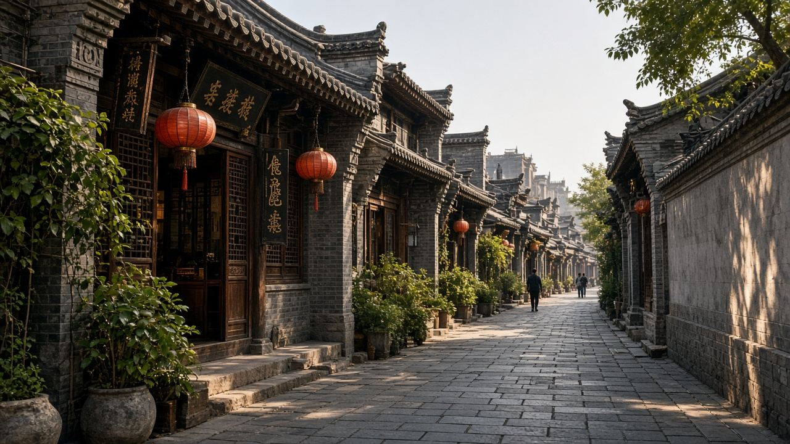
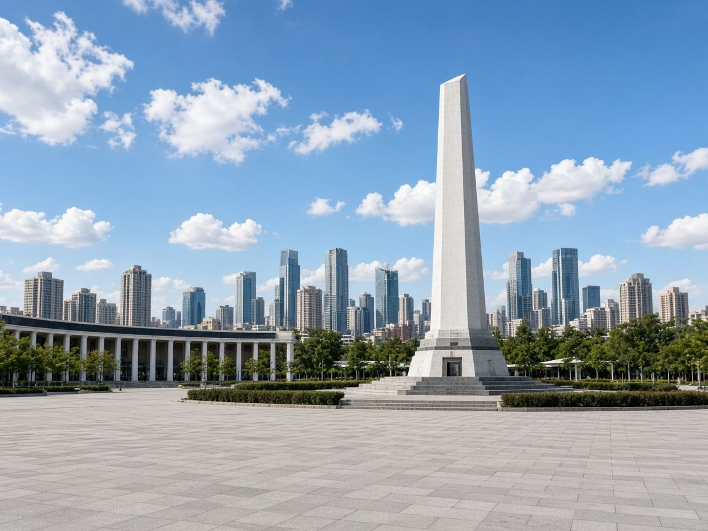
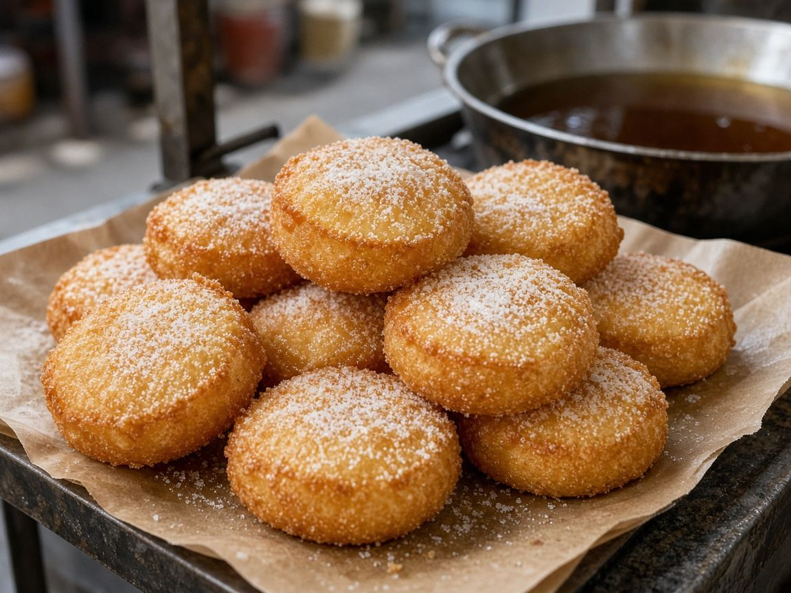
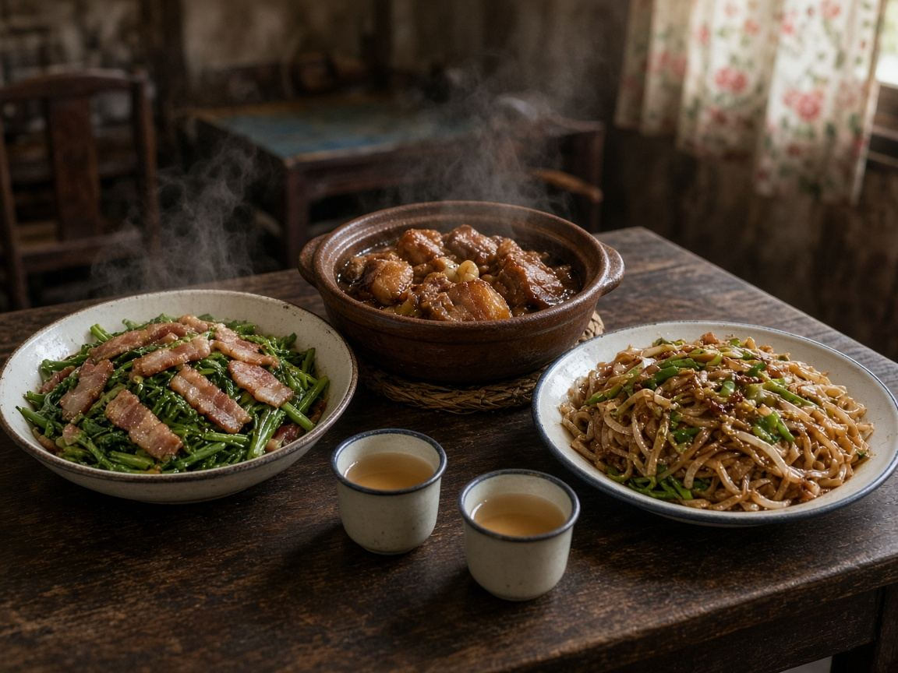

住
南昌瑞颐大酒店（滕王阁店）
东湖区沿江北路 69 号 · 八一大桥 / 赣江边 · 高楼层就是江景打卡位
今晚 · 半夜到
打卡点
一天按顺序拍这 6 个就够。第 7、8 个留给多出来的半天。


明天怎么走
半夜到的人不要 6 点爬起来。9 点过早仍吃得到。

09:00–10:30
大士院过早
点单：拌粉 + 瓦罐汤 + 白糖糕。不能吃辣说「微辣 / 免辣」。
- 小罗子汤店：拌粉、皮蛋肉饼汤
- 老南昌白糖糕：约 1 元一个，现炸
10:30–13:30
万寿宫逛吃 · 午饭
继续小吃，或坐店吃赣菜。别吃撑，下午还要登阁。
- 坐店：小柴米（万寿宫）或打车去堂瓦里（八一广场）
- 必点意向：藜蒿炒腊肉、瓦罐红烧肉、南昌炒粉
14:30–17:30
滕王阁 · 主打卡
登阁看赣江。能背《滕王阁序》可试南门免票，队太长直接买票。汉服租赁看心情。
18:00 后
江景收尾 · 二选一
A 省事：回酒店，沿江 / 八一大桥拍夜景。
B 过江：地铁 1 号线秋水广场。停喷也能隔江拍滕王阁。
必吃 + 店家
优先带大众点评店铺页的店。连锁请在 App 里看最近分店是否营业。
早饭标配
正餐赣菜

解辣 / 夜宵
多出半天
第二天 9:00–11:30 二选一，然后取行李。不要去梅岭、海昏侯。